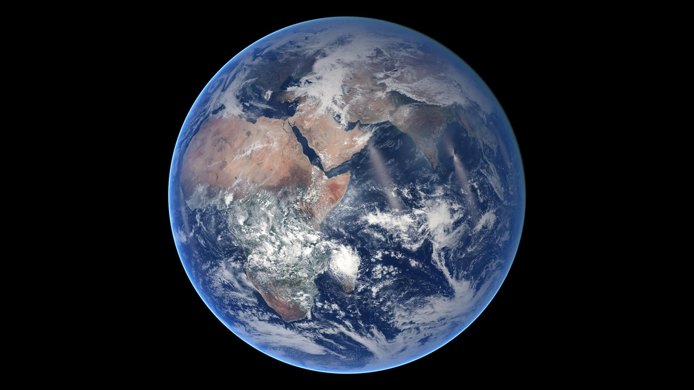
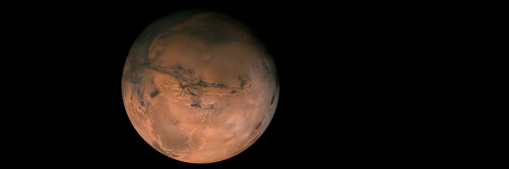
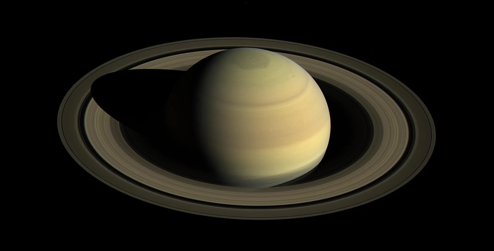
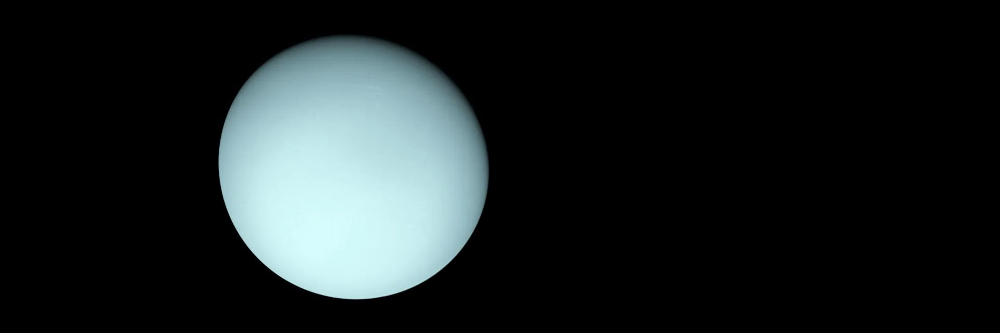
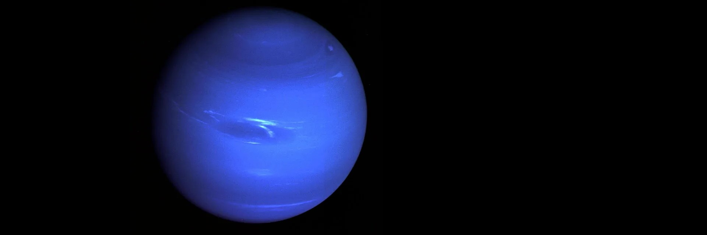

Inner Planets
The first four planets from the Sun are Mercury, Venus, Earth, and Mars. These inner planets also are known as terrestrial planets because they have solid surfaces.
Mercury Facts
Mercury is the smallest planet in our solar system, and the nearest to the Sun.
Explore Mercury →

Venus Facts
Venus is the second planet from the Sun, and Earth's closest planetary neighbor.
Explore Venus →
Earth Facts
Earth—our home planet—is the third planet from the Sun, and the fifth largest planet.
Explore Earth →
Mars Facts
Mars—the fourth planet from the Sun—is a dusty, cold, desert world with a very thin atmosphere.
Explore Mars →
Outer Planets
The giant planets in our outer solar system don't have hard surfaces and instead have swirling gases above a core. Jupiter and Saturn are gas giants. Uranus and Neptune are ice giants.
Jupiter Facts
Jupiter is the largest planet in our solar system.
Explore Jupiter →
Saturn Facts
Saturn is the sixth planet from the Sun, known for its extensive ring system.
Explore Saturn →
Uranus Facts
Uranus is the seventh planet from the Sun, known for its unique sideways rotation.
Explore Uranus →
Neptune Facts
Neptune is the eighth and most distant planet in our solar system.
Explore Neptune →